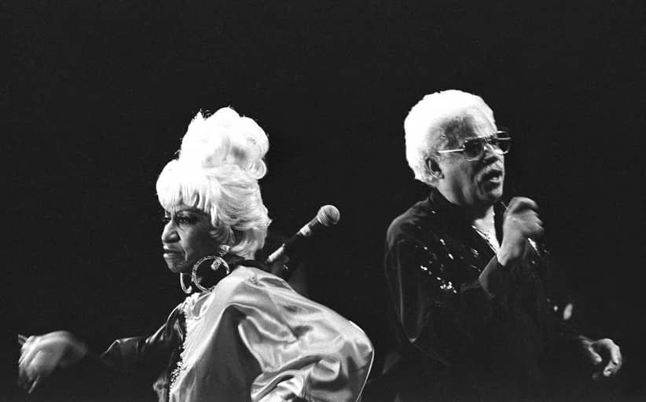
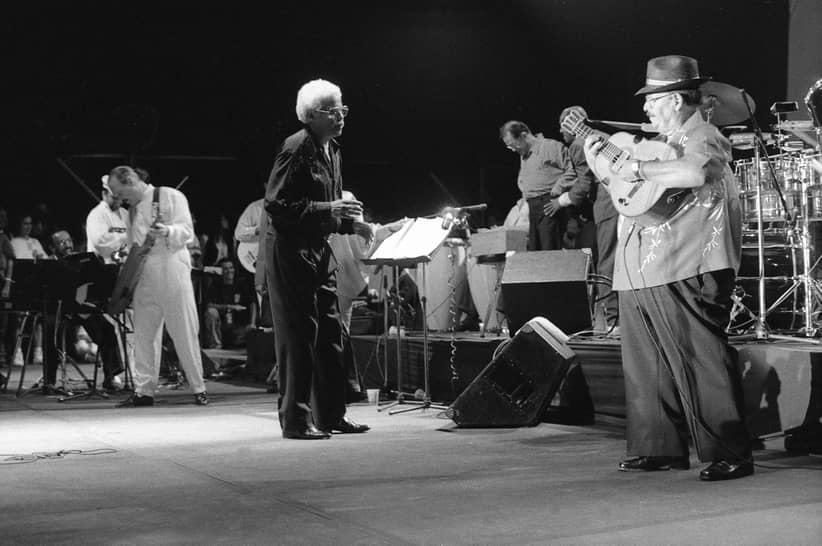
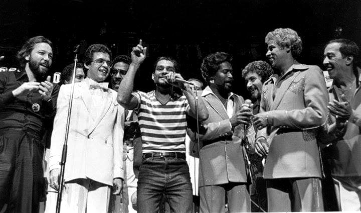
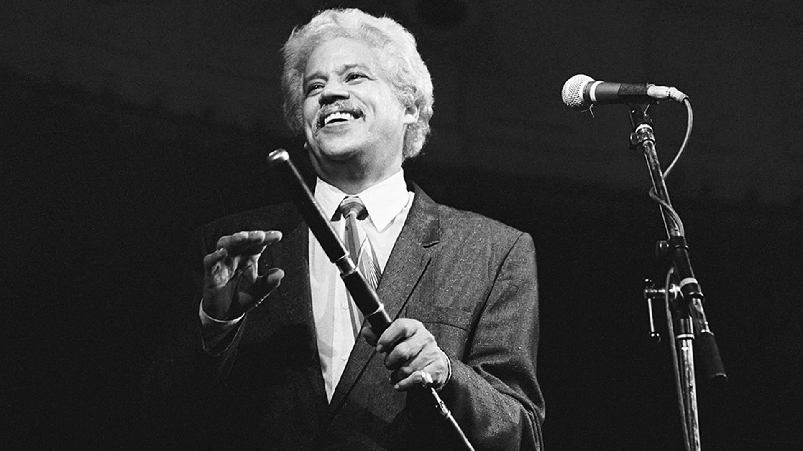

Introducción
Fania All-Stars es una agrupación de salsa y música caribeña que a lo largo de su historia ha experimentado diversos géneros musicales como: el rock, jazz, mambo, soul, y más; Originaria de la Ciudad de Nueva York (Nueva York), Estados Unidos, fue fundada en 1968 y está integrada por los artistas más conocidos del sello Fania Records, a menudo reforzados por estrellas invitadas procedentes de otros sellos de música latina y de otros estilos.
La historia de este grupo musical representa la ascensión y difusión de la salsa como etiqueta comercial para la música latina, por ello son considerados referentes en la historia de la música latina, en particular de la salsa. Ellos fueron la primera agrupación latina-tropical en pisar suelo africano participando en el festival de música del recordado evento de box Zaire 74 organizado por Don King, también participaron el concierto de inauguración del Coliseo Roberto Clemente en San Juan, Puerto Rico para 1973.
El director artístico musical y creativo de las grabaciones de Fania All-Stars fue Johnny Pacheco, músico dominicano y fundador, junto con Jerry Masucci, del sello Fania Records. En 1968 Pacheco y Masucci reunieron, con la gran visión creativa de Pacheco, a una serie de músicos con el fin de brindar una presentación y así poder competir con los artistas del sello "Alegre Records" del empresario Al Santiago, quienes habían formado el grupo Alegre All Stars.
En las filas de Fania All-Stars estuvieron músicos como Larry Harlow, Richie Ray, Papo Lucca, Mongo Santamaría, Yomo Toro, Bobby Valentín, Ray Barreto, Roberto Roena, Johnny Pacheco, Louie Ramirez y cantantes como Celia Cruz (única mujer), Héctor Lavoe, Willie Colón, Rubén Blades, Cheo Feliciano, Ismael Miranda, Ismael Rivera, Ismael Quintana, Santos Colón, Adalberto Santiago y Pete "El Conde" Rodríguez. Posteriormente han militado algunos de los más importantes músicos de salsa y jazz latino de los últimos 40 años, provenientes tanto de las filas de Fania Records como de otros sellos. Entre las estrellas invitadas procedentes de otros géneros musicales y del mismo, que han colaborado a menudo con Fania All-Stars están Manu Dibango, Jorge Santana (hermano de Carlos), Eric Gale, y Bobby Cruz, entre muchos otros.

Fania records
Fania Records es un sello discográfico fundado en la ciudad de Nueva York por el productor, promotor, y empresario estadounidense, Jerry Masucci y el músico dominicano Johnny Pacheco en 1964. La discográfica tomó su nombre de una antigua canción cubana cantada por Reinaldo Bolaño.
La historia de Fania se inició en los barrios latinos de Nueva York. Desde la década de los 1930 hasta los años 1960, muchos jóvenes de ascendencia cubana llegaron a Estados Unidos y trajeron consigo sus ritmos musicales. De esta forma, surge un intercambio cultural que trae una mezcla de sonidos de Cuba que revoluciona la historia musical en Nueva York.
Jerry Masucci creó el sello de "Fania Records" junto con Johnny Pacheco para lanzar a la escena la música popular cubana, dándole un nombre comercial a una síntesis de varios géneros musicales cubanos. En aquella sociedad, Jerry Masucci era el hombre de negocios y Johnny Pacheco el gestor musical encargado de todo lo que correspondía a las producciones musicales y al descubrimiento de nuevos talentos. A este último, Pacheco, se le atribuye, dentro del contexto de Fania, la creación del concepto conocido como salsa.
La orquesta del copropietario del sello, Johnny Pacheco, fue la primera en grabar un disco de larga duración para la nueva discográfica en 1964. En aquel entonces, Pacheco contaba en su orquesta con los cantantes Monguito y Pete "El Conde" Rodríguez. A este grupo se fueron sumando orquestas como la de Ray Barreto, que incluía a Adalberto Santiago como vocalista. Asimismo, se sumó la orquesta de Larry Harlow, "El Judío Maravilloso", con el cantante Ismael Miranda; la orquesta de Willie Colón, con Héctor Lavoe, "el Cantante de los Cantantes", como vocalista; la orquesta de Roberto Roena, llamada el Apollo Sound; la orquesta del arreglista Bobby Valentin y los solistas Justo Betancourt y Santos Colón.
En 1968, cuando Johnny Pacheco todavía dirigía "Fania All Stars", Masucci invitó a otros cantantes a colaborar como músicos con ellos. Comenzaron a tocar en The Red Garter Club, situado en la ciudad de Nueva York; pero fue en 1971 en el Cheetah Club de Manhattan cuando llegaron a convertirse en legendarios: Masucci supo cómo encaminar los talentos de su gente, lo que le ganó el apodo de "El Padrino de la Salsa". Por los años 1970, eligió a Larry Harlow para que fuera el productor de la grabación de las Estrellas de Fania, mientras que Johnny Pacheco ejercía como director. Llegaron incluso a filmar un documental titulado Our Latin Thing (Nuestra Cosa Latina).

Evolución
Desde el principio, Fania Records y sus subsidiarios superaron las expectativas de todos. El sello fue creada en 1964. Penetró en el mercado con tanto éxito y se hizo tan popular a nivel internacional que sus ejecutivos decidieron ampliar su talento para llegar a un público aún más amplio. ¿El resultado? La exitosa Fania All Stars, un grupo que reunió a varios de los artistas más populares del sello. Este movimiento solidificaría aún más la posición del sello en la escena musical internacional.
El primer concierto de Fania All Stars, "Live at the Red Garter", fue un experimento promocional diseñado únicamente para probar las aguas. El elenco de estrellas incluyó a Tito Puente, Eddie Palmieri, Ricardo Ray y Bobby Cruz, y resultó en un álbum doble en vivo. El experimento no pudo haber sido más exitoso. En 1971, la banda revolucionó la salsa como género con "Fania All Stars at the Cheetah", un concierto que fue filmado y grabado en vivo. En 1973, después de una exitosa gira, la banda hizo su primera aparición en el Yankee Stadium de Nueva York. Las estrellas se presentaron ante innumerables admiradores que habían contraído la fiebre y se desmayaban en presencia de intérpretes consagrados del género como Willie Colón, Johnny
Pacheco, Bobby Valentín, Ray Barreto y Mongo Santamaría. Este concierto también fue filmado y grabado en vivo y establece el estándar en la industria de la música.
Los All Stars estaban en suelo fértil y no perdieron el tiempo cosechando los beneficios. En 1974, aparecieron en vivo en el estadio Statu Hai en Kinshasa, Zaire, que fue el escenario de la película "Fania All Stars Live in Africa". En 1975, la banda regresó al Yankee Stadium, esta vez con nombres tan famosos como Celia Cruz, Héctor Lavoe, Justo Betancourt, Ismael Quintana, Cheo Feliciano, Ismael Mirando, Pete "El Conde" Rodríguez, Bobby Cruz y Santos Colón. Uno tras otro, la banda continuó actuando en conciertos que fueron tan exitosos y numerosos: "Salsa", "Live", "Best Of", "Live in Japan" (1976) y "Tribute to Tito Rodríguez", que marcó la primera actuación de Rubén Blades con los All Stars.
Para celebrar adecuadamente el 20 cumpleaños de Fania All Stars y el 30 de Fania Records, el sello ha relanzado dos conciertos: "Live in Africa" y "Live in Japan", que impulsaron una exitosa gira por los cinco continentes y mostraron la identidad de una familia creada que ha difundido su mensaje social, musical y cultural en todo el mundo.
La historia de este grupo musical representa la ascensión y difusión de la salsa como etiqueta comercial para la música latina,1 por ello son considerados referentes en la historia de la música latina, en particular de la salsa. Ellos fueron la primera agrupación latina-tropical en pisar suelo africano participando en el festival de música del recordado evento de box Zaire 74 organizado por Don King,2 también participaron el concierto de inauguración del Coliseo Roberto Clemente en San Juan, Puerto Rico para el año 1973.

Actualidad
El 17 de abril de 2014, Cheo Feliciano, quien venía de vencer un cáncer, falleció en un accidente de tránsito en el sector de Cupey (Barrio de San Juan, capital de Puerto Rico), en la carretera 176. El velatorio de Cheo se realizó el sábado 19 de abril en el Coliseo Roberto Clemente de San Juan y fue sepultado en su ciudad natal, Ponce.
Para ese año, La Sociedad Americana de Compositores, Autores, y Publicadores (ASCAP) en los 100 años de su fundación, otorga el Premio ASCAP a la Herencia Hispana a la Fania All Stars.
La ceremonia formal se llevó a cabo el martes 18 de marzo de 2014 en el Hammerstein Ballroom del Manhattan Center de Nueva York.
Los artistas que participaron en esta celebración fueron: Johnny Pacheco, Isidro Infante, Bobby Valentín, Larry Harlow, Roberto Roena, Eddie Montalvo, Rubén Blades, Ismael Miranda y Víctor Manuelle como artista invitado.
Para 2015, el director de la Fania All Stars, Johnny Pacheco, recibió una serie de homenajes por sus 50 años de trayectoria artística que fueron desde conciertos hasta la presentación de un documental titulado "Yo soy la salsa", en donde se narra, además, cómo se creó este movimiento cultural que lleva los sonidos afrocaribeños a todos los rincones del mundo.
El 16 de abril de 2016, Ismael Quintana con 78 años, falleció en el estado de Colorado, luego de sufrir un infarto. Al momento de su muerte, Quintana tenía cuatro días bajo cuidados intensivos en un hospital de Estados Unidos, fue sepultado en su ciudad natal Ponce, Puerto Rico.
El 15 de febrero de 2021, Johnny Pacheco con 85 años de edad falleció en el estado de New York después de ser hospitalizado por una pulmonía. Su esposa 'Cuqui' Pacheco comunicó en su página de Facebook que Johnny había sido hospitalizado de urgencia por síntomas asociados a neumonía el 13 de febrero. Murió dos días después, el 15 de febrero en el Holy Name Medical Center Teaneck, N.J.
Desde su creación en 1968, la Fania All Stars ha trascendido las barreras del idioma y culturas en todo el mundo. Con el pasar del tiempo su música se sigue oyendo en las calles de "El Barrio" en Nueva York, en el Caribe, América Latina, Europa y África.
Esta agrupación está considerada por muchos como la mejor agrupación de salsa y música latina, no solo por el tiempo que vienen tocando juntos o por los premios que han recibido a lo largo de su carrera, el último más reciente otorgado por La Sociedad Americana de Compositores, Autores, y Publicadores (ASCAP) que en su aniversario número 100, entregó el Premio ASCAP a la Herencia Hispana a la Fania All Stars, sino también, por los artistas que la integran actualmente y por aquellos que ya fallecieron como Héctor Lavoe, Celia Cruz, Ismael Rivera, Cheo Feliciano, Ray Barreto, Yomo Toro, Barry Rogers y otros más.
Actualmente, las leyendas vivas de las estrellas de Fania siguen brindando presentaciones siempre recordando la historia y el legado de los artistas que la integran actualmente y de los que han pasado por dicha agrupación.
